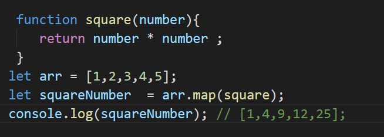

CallBack and Array Methods which accept CallBack functions as argument
Priyanshu Shrivastava
september, 2021
In JavaScript, we can pass a function as an argument and return a function inside a function is known as Higher Orders Functions. So when we pass a function as an argument and invoke it inside, the outer functions are called callback functions. Call back functions are generally used in arrays, promises, event loops, etc. Callback functions are invoked according to the need of the outer function; suppose the outer function has some tasks to execute, and right after that invoke the callback function.
Call Back in Array Methods
1. Map()
The map() function iterates over an array and invokes a call-back function for every element present in the array and returns the element with the added value and maps it to the same index and then returns a new array. If we use map() we don’t have to create a loop manually to iterate over an array. In the map() function's call back is called with three arguments passed to it, in the first Argument value of the element, second argument index of the elements, and third argument is the array itself.
Example
Here we create an array(arr) and callback function(square) and another array(square Root) in which we're using map() function. When code executes, map() calls a (square) function for every value present in a (arr) and maps the value returned by the square function at the same index in (square Root).The first map() function calls the (square) function for the value on the first index of (arr) The (square) takes the value on the first index as an argument and returns the value, and the map() will map that square value to (square Root) at the same index. These steps are kept repeating until the last value in (arr).
2. Filter()
The filter() function almost works the same as a map() function, but the only difference is that whatever callback function is passed in the filter() function, that callback function returns a boolean value. So whenever the callback function returns true for a value, it maps it to the new array, and if it returns false then that value will not be mapped to the new array.
Example
In this example, we filter out elements in the array that are odd. Here we create an array (arr) and store integer values in it. And create a callback function (sold) which returns boolean values, true for odd and false for even numbers, and create another array (result) where we use filter() function and pass (sold) as a callback function and store odd numbers. Now when the code executes, what the filter() function does is call the (sold) function for every value of (arr) and when the (isOdd) function returns true for any value it maps to the (result) array.
Conclusion
These are the two array methods that use call back function as arguments there are more array methods that use call back as an augment eg for each(), every(), some(), etc. These methods are complex and difficult to understand, but, once you get comfortable these methods help you to create awesome stuff.